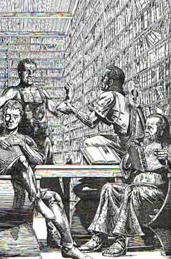
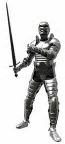

Enciclica di nuovi incantesimi di Loky

ORISONS
DI LOKY
Helpful
Idea
| Sfera di riferimento |
Thought |
| Range |
0 |
| Duration |
10 rounds |
| Area of Effect |
Il chierico |
| Components |
V,S |
| Casting Time |
1 |
| Saving Throw |
None |
Il chierico invoca l'aiuto di Loky per risolvere un
problema mentale. Il chierico, quindi, riceverà un bonus di +1 alla prima prova
di intelligenza che eventualmente effettuerà nel corso della durata
dell'incantesimo. Si noti che questa magia non vale per agevolare operazioni che durano più di un minuto,
si pensi ad esempio all'attività di scrivere un libro.
Little Resistance to Spells
| Sfera di riferimento |
Protection |
| Range |
0 |
| Duration |
1 round per level |
| Area of Effect |
Il chierico |
| Components |
V,S |
| Casting Time |
4 |
| Saving Throw |
None |
Il chierico riceve un bonus di + 1 al suo prossimo tiro
salvezza contro incantesimi purché questo avvenga entro la durata della magia.
Dopo aver effettuato il primo tiro salvezza la magia svanirà.
Magic
Sense
| Sfera di riferimento |
Divination |
| Range |
0 |
| Duration |
Istantanea |
| Area of Effect |
Il chierico |
| Components |
V,S |
| Casting Time |
1 round |
| Saving Throw |
None |
Il chierico si concentrerà un round al termine del quale
sentirà una vibrazione mentale qualora entro una sfera di 15 metri di raggio
con il centro nella sua persona vi fosse una qualsiasi fonte magica (che sarebbe
rilevata con un detect magic) . Il chierico non saprà come o cosa emana la
magia né potrà determinare la potenza della fonte magica ma saprà solo che qualcosa di magico si trova entro 15 metri da lui.
Minimum
Healing
| Sfera di riferimento |
Healing |
| Range |
Tocco |
| Duration |
Istantanea |
| Area of Effect |
Una creatura |
| Components |
V,S |
| Casting Time |
5 |
| Saving Throw |
None |
Il chierico cura con il suo tocco magicamente 1 punto
ferita alla creatura soggetta alla magia. Trattandosi di cure magiche sono in
grado di fare uscire un comatoso dal suo stato di coma.
1°
LIVELLO DI POTERE
|
Candle
of the Reader |
Conjuration |
|
|
| Sphere : |
Creation |
| Range : |
Tocco |
| Components : |
V, S, M |
| Duration : |
24 ore |
| Casting Time : |
1 round |
| Area of Effect : |
Special |
| Saving Throw : |
None |
Per
lanciare questa magia il chierico di Loky deve avere un porta candela di argento
finemente lavorato. Dopo aver lanciato la magia
nel porta candela apparirà una candela in grado di illuminare a tre
metri di distanza e permettere di leggere. La candela è particolarmente
resistente al vento e si spegnerà difficilmente. Il componente materiale per questo incantesimo è il
porta candela di argento dal peso di 1/2 libbra e dal valore minimo di 10 monete
d'oro che non si consuma al lancio della magia.
|
Enemy
Detection |
Divination |
|
|
| Sphere : |
Thought |
| Range : |
0 |
| Components : |
S |
| Duration : |
Istantanea |
| Casting Time : |
1 round |
| Area of Effect : |
Special |
| Saving Throw : |
None |
Questa magia può essere lanciata dal chierico
di Loky in modo molto difficile da notare, basta infatti al chierico un leggero
movimento della mano che si avvicina alla sua testa e la concentrazione per un
intero round. Per tale
motivo, le creature che osservano il chierico potranno rendersi conto del lancio
dell'incantesimo solo superando una prova di intelligenza con penalità di -3. Alla fine del round il chierico di Loky avrà capito quali persone
dinanzi a lui hanno intenzioni ostili nei suoi confronti. Occorre che tali soggetti
abbiano la reale intenzione di nuocere direttamente al chierico di Loky. Per
intenzioni ostili si dovrà intendere la volontà di porre in essere qualsiasi
azione direttamente lesiva del chierico di Loky o dei suoi interessi personali.
Rileveranno come intenzioni ostili, ad esempio, la volontà di derubare il
chierico, di imprigionarlo, di arrestarlo, di ferirlo, di rapirlo, di truffarlo,
e così via... Ciò, indipendentemente, dalle motivazioni che sono alla base di
tale volontà lesiva. In particolare, il chierico di Loky potrà valutare con
questo incantesimo una persona per livello di lancio della magia tra tutte
quelle presenti entro 15 metri di distanza da sé stesso. Affinché la magia
funzioni occorre che il chierico possa guardare
in viso le persone che intende valutare. Questa magia può essere usata solo su umani, semi-umani e
umanoidi.
|
Item
Origin |
Divination |
|
|
| Sphere : |
Divination |
| Range : |
Tocco |
| Components : |
V, S |
| Duration : |
Istantanea |
| Casting Time : |
1 round |
| Area of Effect : |
Un oggetto inanimato |
| Saving Throw : |
None |
Questa magia funziona solo sugli oggetti
inanimati. Quando viene lanciata il chierico avrà immediatamente idea della
provenienza dell'oggetto. Si tratta di un'idea generale che analizza la zona di
provenienza geografica dell'oggetto, l'idea sarà tanto più generica quanto
saranno vaghe le conoscenze del chierico sulla zona di provenienza. Ad esempio,
supponiamo che il chierico conosca bene la zona del vecchio Granducato di Karsar
e lanci la magia su un pugnale proveniente da quella zona, una idea plausibile
sarà: "si tratta di un pugnale di fattura pergariana, l'elevata bravura nella
forgia della lama lascia supporre che simili pugnali siano costruiti
prevalentemente nella capitale Pergar". Supponiamo invece che il chierico non
conosca il Granducato di Karsar, la risposta potrebbe essere quindi la seguente:
"è un pugnale che denota una fattura degna
di una civiltà umana evoluta, deve trattarsi di una zona dove l'ordine e
la disciplina sono sovrane e dove l'essenzialità delle cose ha la meglio sulla
sfarzosità". La magia non funziona sulle creature o sugli oggetti in
qualsiasi modo animati, inoltre maggiore è la particolarità
dell'oggetto maggiori saranno le informazioni che è possibile ottenere. Si
tratta sempre di osservazioni e idee che il chierico ottiene e che si basano
sulla forma, sulla fattura, sui materiali e sull'arte utilizzata nella
produzione dell'oggetto. Non saranno, invece, ottenute con questo incantesimo
informazioni relative alla storia dell'oggetto intesa come i motivi della sua
creazione, il suo precedente utilizzo od i suoi precedenti possessori o
proprietari.
|
Loky
Preservation |
Abjuration |
|
|
| Sphere : |
Wards |
| Range : |
Tocco |
| Components : |
V, S, M |
| Duration : |
Special |
| Casting Time : |
1 round |
| Area of Effect : |
Special |
| Saving Throw : |
None |
Questa magia richiede per essere lanciata una
teca di vetro rifinita in argento dove verrà deposto quello che si desidera
conservare. Riposti nella teca, quindi, possono essere conservati oggetti, purché
questi non siano di natura organica e non siano animati. In ogni teca può essere
riposto un unico oggetto anche se composto da più parti, ad esempio una corazza
antica. La teca più grande potrà contenere un oggetto dalle dimensioni di una
creatura di taglia media,
una teca di questo genere ha un costo di 500 corone, le altre sono di dimensioni
e costo inferiore fino a raggiungere la teca più piccola che può contenere
ad esempio un anello (questa teca misura 15 cm. * 15 cm. * 15 cm.) che costa 50
corone. Una volta inserito l'oggetto nella teca, si può lanciare l'incantesimo
che farà in modo di conservare l'oggetto nelle medesime condizioni in cui si
trovava al lancio della magia per un tempo indefinito. L'incantesimo si
interromperà non appena l'oggetto sarà rimosso dalla teca o la teca sia
rotta. Per tutta la durata dell'incantesimo, sia l'oggetto conservato nella teca
che la teca stessa non necessiteranno di alcuna forma di manutenzione. Si noti,
però, che questo incantesimo mette al riparo gli oggetti dalla normale usura del
tempo senza proteggerli da atti vandalici od incidenti (si pensi ad un incendio
od un crollo) che potranno danneggiare normalmente sia la teca che il suo
contenuto. Il componente materiale di questo incantesimo è la teca protettiva
che non si consuma al lancio dell'incantesimo.
|
Loky
Protected Library |
Abjuration |
|
|
| Sphere : |
Wards |
| Range : |
Tocco |
| Components : |
V, S |
| Duration : |
Special |
| Casting Time : |
1 round |
| Area of Effect : |
Un libro |
| Saving Throw : |
None |
Questa magia incanta un qualsiasi libro in
modo tale che non si rovini nel tempo e durante una normale lettura. Per
conservare un libro protetto da questa magia non occorre alcuna altra
manutenzione. Occorre però che il libro si trovi dentro un edificio sacro al
culto di Loky, quindi in una sua confraternita. Il libro sarà protetto
dallo scorrere del tempo e delle pagine per un tempo indefinito fino a che non
sarà portato via dal luogo sacro. Il libro non è protetto da incidenti
imprevisti, come possono essere un incendio o un terremoto, o da danni causati
volontariamente oppure colposamente dalle creature, ciò in quanto la magia protegge
il tomo solo dalla
rovina che sarebbe causata da un normale e attento utilizzo dello stesso.
|
Object
Tracker |
Divination |
|
|
| Sphere : |
Divination |
| Range : |
9 metri |
| Components : |
V, S |
| Duration : |
1 ora per livello |
| Casting Time : |
1 round |
| Area of Effect : |
One object |
| Saving Throw : |
Speciale |
Questo incantesimo
può essere lanciato su un qualsiasi
oggetto inanimato il chierico riesca a vedere e distinguere nettamente. Da quel momento in poi e per tutta la durata dell'incantesimo il
chierico conoscerà la direzione e la distanza dell'oggetto stesso.
In particolare, il chierico percepirà
la distanza e la direzione intese come percorso minore ottenuto tracciando
un'ipotetica linea retta tra la sua persona e l'oggetto sul quale ha lanciato
questo incantesimo. Qualora al
momento del lancio della magia l'oggetto è posseduto o trasportato da una creatura
quest'ultima ha diritto ad effettuare un tiro salvezza contro incantesimi per
evitare gli effetti della magia. Se, invece, l'oggetto sul quale è stata
lanciata la magia è raccolto da una creatura dopo il lancio dell'incantesimo ma
nel corso della sua durata questa non potrà effettuare tiro salvezza su magia per evitare
gli effetti dell'incantesimo (ovviamente la magia potrà essere dissolta
dall'oggetto magicamente). Se l'oggetto
viene rotto o è trasferito su un diverso piano dimensionale l'incantesimo cessa
immediatamente. Un chierico di Loky non può avere più di uno di questi
incantesimi attivi simultaneamente.
|
Prevent
Spoilage |
Abjuration |
|
|
| Sphere : |
Wards |
| Range : |
Touch |
| Components : |
V, S, M |
| Duration : |
1 anno |
| Casting Time : |
1 round |
| Area of Effect : |
20 libbre di derrate
alimentari per livello |
| Saving Throw : |
None |
Questo incantesimo fa si che un certo
ammontare di riserve alimentari di qualsiasi tipo (sia solide che liquide) siano estremamente sgradite a
muffe, insetti, vermi e piccoli animali come topi (non però mostri o animali
più grandi) e quindi non siano da questi mangiate o rovinate per l'intera
durata della magia. La magia, ovviamente, non evita che tali derrate si
corrompano naturalmente andando a male con lo scorrere del tempo. Il componente materiale è una manciata di ortica
essiccata e macinata il polvere dal peso di 1/10 di libbra e dal costo 2 monete
d'oro che si consuma al lancio della magia.
|
Stop
Bleeding |
Alteration |
|
|
| Sphere : |
Healing |
| Range : |
Touch |
| Components : |
V, S, M |
| Duration : |
Istantanea |
| Casting Time : |
1 round |
| Area of Effect : |
1 creatura |
| Saving Throw : |
None |
Questa magia blocca immediatamente
e definitivamente ogni tipo
di emorragia, anche le più gravi, ma non cura alcun danno o punto ferita.
Questo incantesimo, anche in caso in cui non vi siano emorragie, fermando ogni
fuoriuscita di sangue può essere utile per evitare di attirare creature
attratte dal sangue come gli squali o per evitare di lasciare tracce di sangue
nella fuga ecc... Il componente materiale è una benda pulita per curare le
ferite dal peso di 2/10 di libbra e dal costo di 1 moneta d'argento che si
consuma al lancio dell'incantesimo.
2°
LIVELLO DI POTERE
|
Analyze
Mechanincal Devices |
Divination |
|
|
| Sphere : |
Divination |
| Range : |
10 yards |
| Components : |
V, S |
| Duration : |
Istantanea |
| Casting Time : |
1 turn |
| Area of Effect : |
Un meccanismo |
| Saving Throw : |
None |
Quando il chierico lancia questa
magica deve concentrarsi a studiare per un turno un meccanismo che ha
precedentemente scoperto e di cui non conosce il funzionamento. Al termine del turno,
durante il quale non deve essere disturbato e rimanere in concentrazione, il
chierico avrà intuito il modo di operare del meccanismo. Se, per esempio, si
tratta di una trappola formata da lance nel muro, costui potrebbe aver capito come e da
cosa la stessa è innescata, da dove fuoriescono le lame, quante sono (e quindi
che danno potenzialmente possono produrre), ecc.... Si noti che nonostante il
chierico abbia
capito come funziona il meccanismo ciò non vuol dire che lo stesso sia in grado di utilizzarlo o
disattivarlo. Il chierico però potrà supervisionare la prova che un ladro
effettui nell'abilità di rimuovere trappole sul meccanismo. Occorre che il
chierico resti vicino al ladro (entro 3 metri di distanza), fornendo
informazioni, per tutto il tempo necessario ad effettuare la prova. Con le indicazioni
fornite dal chierico il ladro otterrà un bonus di +25% a
rimuovere il meccanismo o ad azionarlo. In nessun caso il chierico può capire
il funzionamento di un meccanismo magico. Utilizzando questo incantesimo su un
meccanismo azionato in tutto od in parte dalla magia, costui si renderà soltanto conto che probabilmente
nel funzionamento dello stesso influenza una fonte di energia magica, senza capire in che modo
essa influisca e di che tipo di magia si tratti.
|
Detect
Disease |
Divination |
|
|
| Sphere : |
Divination |
| Range : |
Tocco |
| Components : |
V, S |
| Duration : |
Istantanea |
| Casting Time : |
1 round |
| Area of Effect : |
Una creatura |
| Saving Throw : |
None |
Quando il chierico di Loky lancia questa magia
e si concentra per un round toccando una qualsiasi creatura riuscirà a capire
se la creatura è ammalata o meno. Il chierico lo capirà anche se la creatura
non ha alcun sintomo apparente della malattia. Il chierico avrà anche idea di che tipo di
malattia di tratta ma non saprà come curarla. Il chierico non ha alcuna
possibilità di essere contagiato dalla malattia attraverso l'uso di questa
magia. Questo incantesimo individua
anche malattie magiche come la licantropia.
|
Detect
Hidden Creatures |
Divination |
|
|
| Sphere : |
Divination |
| Range : |
0 |
| Components : |
V, S |
| Duration : |
10 rounds |
| Casting Time : |
4 |
| Area of Effect : |
Il caster |
| Saving Throw : |
None |
Quando il chierico lancia questa magia
costui riesce
a vedere tutte le creature che, trovandosi entro 30 metri di distanza, sono nascoste
alla sua normale vista. In particolare, questo incantesimo permette al chierico
di vedere creature che si sono nascoste utilizzando capacità di mimetizzazione
(sia di origine camaleontica che di sfruttamento ambientale) o l'abilità di
nascondersi nelle ombre. Questo incantesimo, invece, non permette al chierico di
vedere creature invisibili per effetto della magia, di poteri magici
assimilabili, o del passaggio in altra dimensione (ad esempio, il chierico non
potrà vedere creature nascoste con la magia invisibility o che si trovano nel border ethereal).
Si noti che queste creature non appariranno per effetto dell'incantesimo ma,
durante l'effetto della magia, saranno visibili unicamente al chierico.
|
Dispel
Scent |
Abjuration |
|
|
| Sphere : |
Wards |
| Range : |
10 metri per livello |
| Components : |
V, S, M |
| Duration : |
3 rounds per livello |
| Casting Time : |
5 |
| Area of Effect : |
Sfera di 9 metri di
diametro |
| Saving Throw : |
Negates |
Quando questa magia viene lanciata tutti gli
odori e le puzze, per quanto nauseabonde esse siano, in una sfera di 9 metri di
diametro svaniscono e con loro anche tutti i loro
effetti. L'area di effetto può essere centrata anche su un oggetto o su una creatura
e sarà mobile movendosi con questo. Se l'incantesimo viene lanciato su una creatura o su un oggetto che è trasportato da una creatura, costei ha
diritto ad un tiro salvezza su magia per evitarlo (se il tiro salvezza
riesce l'incantesimo si considererà fallito e non avrà alcun effetto). Questo incantesimo
garantisce un'ottima difesa contro tutti gli attacchi basati sull'odore come
quello dei trogloditi, inoltre può essere utilizzato per nascondere il proprio
odore ad animali che usino l'olfatto per individuare creature altrimenti
nascoste. Si noti che questo incantesimo non purifica l'aria nell'area d'effetto
ma annulla solo gli odori al suo interno. Per tale motivo, questo incantesimo
non potrà efficacemente impedire effetti di nubi, nebbie, gas, spore che si
trovino nell'area e il cui effetto non si basi sull'odore (ad esempio qualora
risultino velenose). Il componente materiale
è una testa d'aglio che scompare quando la magia è lanciata. Dieci teste d'aglio
trattate alchemicamente per evitarne il deperimento hanno un costo di 2 monete
d'oro ed un peso pari ad 1 libbra.
|
Kian
Learning |
Charme |
|
|
| Sphere : |
Thought |
| Range : |
Tocco |
| Components : |
V, S, M |
| Duration : |
Speciale |
| Casting Time : |
1 round |
| Area of Effect : |
Una creatura |
| Saving Throw : |
None |
Questa magia aiuta le creature
nell'apprendimento. Può essere lanciata prima di intraprendere lo studio di una
nuova nozione od anche nel corso del suo apprendimento tramite l'imposizione della mano sul
capo della creatura. Questo incantesimo può essere utilizzato al solo fine di
imparare una singola nuova nozione scelta dal beneficiario al momento del lancio
dell'incantesimo ed aiuterà, quindi, quest'ultimo solo nell'apprendimento di
quella specifica nozione. La semi-divinità Kian, dunque, veglierà su chi riceve
questo incantesimo facilitando
l'apprendimento della nozione desiderata. In termini di gioco questo incantesimo
può essere utilizzato dai maghi per apprendere nuovi incantesimi. In questo caso
il mago riceverà un bonus pari a +5 %/+1 su 20 per apprendere la nozione (non
potendo comunque superare il massimo punteggio massimo raggiungibile). Questo
incantesimo può essere anche utilizzato per apprendere nuove competenze relative
alle armi, arti di combattimento e nuove competenze non relative alle armi. In
tal caso il beneficiario, fino a che resterà sotto effetto della magia, imparerà un punto supplementare al
giorno di studio. Questo beneficio, applicandosi solo allo studio, non inciderà
sui punti che il personaggio deve effettuare in pratica. Una volta ottenuta la conoscenza desiderata
la magia avrà termine. In ogni caso, solo il chierico che ha lanciato la magia può farla terminare
anche
precedentemente toccando il capo della creatura con la propria mano (la magia
può comunque essere dissolta con un dispel magic lanciato con successo). Ogni creatura può essere sottoposta
ad una sola magia di questo tipo contemporaneamente. Deve osservarsi, infine,
che questa magia non aiuta nelle ricerche, nello
scrivere libri, o nel costruire oggetti magici ecc... in quanto aiuta
esclusivamente nell'apprendimento passivo che non implichi l'uso di abilità
mentali creative. Il componente materiale è un pugno di fosforo dal peso di 1/10
di libbra e dal costo di 15 monete d'oro che si consuma
al lancio della magia.
|
Languages
Understanding |
Alteration |
|
|
| Sphere : |
Divination |
| Range : |
Tocco |
| Components : |
V, S, M |
| Duration : |
1 turno |
| Casting Time : |
1 round |
| Area of Effect : |
Un oggetto scritto o una
creatura parlante. |
| Saving Throw : |
None |
Quando il chierico lancia questa magia
costui diviene in grado di capire le parole scritte su un oggetto (libro, lapide ecc...) o
pronunciate da una creatura parlante che sarebbero altrimenti per lui incomprensibili.
In entrambi i casi il chierico dovrà toccare la creatura o l'oggetto scritto.
Il chierico capirà le parole ma non è detto che capirà il senso delle frasi,
il linguaggio scritto per esempio potrebbe essere un codice segreto o uno
scritto sconclusionato. Il materiale scritto potrà essere letto alla velocità
di una pagina ogni round. Le scritte in magico non saranno rese comprensibili
attraverso l'utilizzo di questo incantesimo. Deve osservarsi, infine, che il
chierico non sarà in grado di rispondere o scrivere nella lingua decifrata
attraverso l'uso di questo incantesimo. Il componente materiale di questo
incantesimo è il simbolo sacro del chierico.
|
Lesser
Appearance |
Abjuration |
|
|
| Sphere : |
Protection |
| Range : |
0 |
| Components : |
V, S, M |
| Duration : |
1 turno per livello |
| Casting Time : |
1 round |
| Area of Effect : |
Il caster |
| Saving Throw : |
Negates |
Questo incantesimo
può essere utilizzato dal chierico di Loky solo all'interno di edifici o
strutture costruite da creature intelligenti od all'interno dei centri abitati
edificati che siano entrambi espressione architettonica di una civiltà
abbastanza avanzata. Il chierico, quindi, non potrà utilizzare questa magia
all'aperto, in zone selvagge, all'interno di grotte naturali od anche in zone
costruite da creature intelligenti ma che rappresentano una forma di
architettura selvaggia o primitiva (non saranno ritenute adeguate, ad esempio,
strutture quali palafitte, capanne, tende e caverne scavate nelle roccia). Se il
chierico che lancia questa magia esce dalla zona in cui poteva lanciarla prima
della fine della sua durata la magia terminerà immediatamente. Quando il
chierico lancia questa magia costui
invoca la sua divinità affinché lo faccia passare inosservato.
Tutte le creature presenti al momento del lancio o che incontrano la creatura
protetta nel corso della durata della magia devono effettuare un tiro salvezza
su magia. Se il tiro salvezza è fallito costoro perderanno la
consapevolezza della presenza della chierico agendo come se la stessa non fosse
presente per tutta la durata dell'incantesimo. Se, però, il chierico effettua
una qualsiasi azione che possa essere considerata, sia direttamente che
indirettamente,
offensiva (si intenda per offensiva un'azione capace di procurare un danno
fisico o patrimoniale alla creatura interessata o ad un suo superiore od alleato) nei confronti di una qualsiasi
creatura (non solo quindi nei confronti di chi ha fallito il tiro salvezza) la
magia terminerà alla fine del round in cui il chierico ha posto in essere tale
azione (ad esempio riattivare una trappola precedentemente disattivata sarà
considerata un'azione di tipo offensivo).
Parimenti l'incantesimo terminerà
qualora il chierico lanci qualsiasi incantesimo od utilizzi altro potere magico
ad eccezione di incantesimi e di poteri magici di cura o rigenerazione
utilizzati sulla propria persona. Il componente materiale di questo incantesimo è il simbolo sacro del
chierico.
|
Loky
Comunicator |
Divination |
|
|
| Sphere : |
Thought, Travel |
| Range : |
Tocco |
| Components : |
V, S, M |
| Duration : |
Speciale |
| Casting Time : |
1 round |
| Area of Effect : |
Due simboli sacri di Loky |
| Saving Throw : |
None |
Il
chierico di Loky lancia questo incantesimo sul simbolo sacro della propria
divinità, a questo punto si concentra su una creatura con la quale desidera
comunicare. Occorre, a tal fine che il chierico conosca personalmente la
creatura, non avendo alcuna rilevanza la conoscenza delle corrette generalità. Se la creatura si trova entro 9 metri di distanza da un qualsiasi simbolo sacro di Loky
costei percepirà la volontà del chierico di comunicare tramite il simbolo sacro.
In caso contrario l’incantesimo fallirà. Il chierico, ovviamente, non saprà però se il contattato è sveglio
e se può o vuole parlare,
semplicemente se ne accorgerà al momento della risposta. Se la creatura
contattata, quindi, tocca il simbolo sacro di Loky, costei potrà iniziare a
dialogare attraverso lo stesso con il chierico. Dai due simboli sacri sarà
emessa la voce del chierico e della creatura contattata sempre
con volume normale (indipendentemente dall'intensità utilizzata dalle creature).
Gli unici suoni che usciranno dai due simboli
saranno la voce del chierico e quella della creatura contattata. Non saranno
trasmessi attraverso il simbolo sacro, infatti, i suoni circostanti o
le voci di altre persone presenti nei pressi del simbolo. Dal momento del lancio
dell'incantesimo con successo la creatura contatta ha 3 rounds per iniziare la
conversazione toccando il simbolo sacro di Loky. Una volta iniziata la
conversazione le due creature potranno parlare liberamente per 1 minuto (1
round).
Per poter funzionare occorre che entrambe le creature si trovino nel medesimo piano
dimensionale. Oltre alla presenza dei due simboli sacri di Loky è necessario che
il chierico utilizzi il componente materiale rappresentato da una
regolare moneta di platino, la quale ultima si consuma quando la magia è
lanciata.
|
Loky
Secret Code |
Alteration |
|
|
| Sphere : |
Wards |
| Range : |
Tocco |
| Components : |
V, S |
| Duration : |
Istantanea |
| Casting Time : |
1 round |
| Area of Effect : |
Un foglio scritto |
| Saving Throw : |
None |
Questo incantesimo può essere lanciato su
qualsiasi foglio di carta, pergamena o telo che abbia su di se scritte in una
qualsiasi lingua conosciuta. La magia non può essere validamente lanciata su
scritte rappresentate da formule magiche. Al lancio di questa magia la pergamena o il foglio scritto in
questo modo diventeranno solo una massa di segni incomprensibili. In quanto questa magia altera nella realtà le scritte sul
foglio, che non resta magico, i suoi effetti non possono essere rimossi con un Dispel
Magic. Parimenti nessun risultato sarà ottenuto con l'utilizzo delle magie di
traduzione quali Language Understanding (Loky, 2° livello di potere speciale) o
Comprehend Languages (Alteration,
1° livello di potere). Un
ladro che provi a decifrare la scritta attraverso l'uso dell'abilità Read Languages
riceverà una penalità supplementare del -20% rispetto a quella normalmente
prevista per decifrare i messaggi in codice (applicandosi, quindi, una penalità
complessiva del - 60%). Se
su un foglio modificato tramite questo incantesimo è lanciata nuovamente questa
magia i segni indecifrabili assumeranno nuovamente la forma originaria. Questo
incantesimo è utilizzato dai chierici di Loky per inviare messaggi cifrati fra le
varie
confraternite di Loky sparse su Arelia.
|
Loky
Sentinel |
Charme |
|
|
| Sphere : |
Thought |
| Range : |
Tocco |
| Components : |
V, S, M |
| Duration : |
8 ore |
| Casting Time : |
1 round |
| Area of Effect : |
Un fedele di Loky |
| Saving Throw : |
None |
Questa magia può
essere lanciata unicamente su un fedele di Loky per permettergli di fare la guardia per otto ore consecutive,
anche notturne, senza subire alcuna penalità come se si fosse riposato con
riposo regolare (non riposo totale). Durante
queste otto ore, però, la sentinella può unicamente fare la guardia al massimo
con brevi ronde, se compie azioni diverse (come lanciare incantesimi,
combattere, o effettuare marcia forzata) la magia svanisce immediatamente e da quel
momento costui inizierà a stancarsi regolarmente. In pratica, con questo incantesimo una
creatura potrà rimanere a fare la guardia tutta la notte ed al mattino potrà
condurre una vita normale come se si fosse riposato. Gli utenti di magia che
ricevono questo incantesimo, però, nonostante recuperino punti magia come in
qualsiasi situazione di riposo regolare non otterranno punti magia bonus come se
avessero dormito. La magia influenza infatti la
mente del guardiano che non baderà a nulla se non ai pericoli che di volta in
volta si presentino. Il componente materiale di questa magia è un particolare estratto di erbe
eccitanti che la creatura deve ingoiare al lancio della magia il cui peso è pari
ad 1/10 di libbra ed il cui costo è pari a 10 corone. Tale componente si consuma
al lancio dell'incantesimo.
|
Protected
Lock |
Abjuration |
|
|
| Sphere : |
Wards |
| Range : |
Tocco |
| Components : |
V, S, M |
| Duration : |
Speciale |
| Casting Time : |
1 round |
| Area of Effect : |
Una serratura |
| Saving Throw : |
None |
Quando il chierico di Loky lancia questa magia
su una serratura (od anche un lucchetto od un chiavistello), toccandola, la
stessa verrà incantata in modo tale che qualora sia oggetto di un qualsiasi
tentativo di apertura o rottura (indipendentemente dall'esisto dello stesso)
non effettuato dallo stesso
chierico che ha lanciato la magia,
si pensi anche ad una magia di Knock o ad un tentativo di Open Lock effettuato
da un ladro, un forte rumore di campanelli inizierà a suonare per
un'ora o fino a che il chierico non decida di farlo smettere (toccandolo) o non sia annullato
con un'altra magia. Il rumore si potrà udire tranquillamente entro 50 metri di
distanza dalla serratura. Se l'incantesimo non è dissolto, la magia
si riattiverà trascorso un turno dal momento in cui l'allarme è terminato od è
stato interrotto. Al momento del lancio il chierico può concentrarsi su altre
specifiche
creature che egli conosca personalmente al fine di permettere anche a costoro di aprire la
serratura senza fare scattare l'allarme.
Il chierico può anche concentrarsi per permettere l'apertura ad intere categorie
di creature (come i membri di una famiglia, gli appartenenti ad una determinata
razza od i
fedeli di un culto). La durata di questa magia dipende dal tipo di componente materiale
utilizzato. Se per il lancio di questa magia, infatti, è utilizzato un
campanello di rame adornato con incisioni sacre dal costo di 3 g.p.
e dal peso di 0,2 libbre l'incantesimo durerà fino al successivo momento di
flusso di energia divina. Se per il lancio di questa magia,
invece, è utilizzato un
campanello d'argento riccamente adornato con incisioni sacre dal costo di 75 g.p. e
dal peso di 0,2 libbra l'incantesimo durerà a tempo indefinito fino a che non
sarà dissolto magicamente. In ogni caso, un chierico può mantenere attivi un
numero massimo di questi incantesimi, lanciati secondo la modalità di durata a
tempo indefinito, pari ad uno ogni due livelli di esperienza raggiunti (1 dal 2°
al 3° livello di esperienza, 2 dal 2° al 3° livello di esperienza, e così
via...). Il chierico che ha lanciato questo incantesimo può, toccando l'oggetto
protetto e pronunciando una breve preghiera (azione finisca complessa con
componenti vocali e somatici), annullare definitivamente la magia. In entrambi i casi il
componente materiale si consuma quando la magia è
lanciata.
|
Rank
Observer |
Divination |
|
|
| Sphere : |
Divination |
| Range : |
50 metri |
| Components : |
V, S |
| Duration : |
Istantanea |
| Casting Time : |
1 round |
| Area of Effect : |
Speciale |
| Saving Throw : |
Speciale |
Questo incantesimo
può essere lanciato con due diverse modalità.
Con il primo metodo la magia permette al chierico di Loky di capire quali fra le creature su cui è lanciato sia di grado più
elevato. Il questo caso il chierico deve scegliere un numero di creature pari ad
un massimo di 2 per livello di lancio della magia che si trovino tutte entro 50
metri di distanza. Si noti che non è detto che sia la creatura più forte o di livello
più alto ad avere il grado più elevato. Per grado più elevato si intende la
creatura che attualmente impone la propria volontà sulle altre ed ha funzioni
di comando su queste. Attenzione occorre che il grado sia attuale ed esercitato
in concreto e non solo potenziale. Se invece le creature sono tutte dello stesso
grado nessuna verrà individuata. In poche parole la magia farà un'analisi
dell'organizzazione delle creature cercando di individuare chi di queste abbia
funzioni di comando. Se è lanciato su due diversi gruppi di creature con diverse
creature al comando il chierico le individuerà tutte ma non potrà conoscere
quali creature siano al comando di quali altre.
Con il secondo metodo, invece, questo incantesimo viene lanciato su una singola
creatura ed il chierico conoscerà l'ambito sociale prevalente in cui questa
creatura opera (si pensi ad esempio a risposte quali "militare", "religioso",
"delinquenziale", "commerciale", "burocratico", "accademico", ecc...) nonché il grado che questa creatura ricopre nel suo
gruppo sociale, con una risposta del tipo "ruolo molto modesto", "grado di
ufficiale", "grado di comando molto elevato", "posizione di grande rispetto",
"indipendente" ecc... la risposta varierà a seconda del tipo di organizzazione
sociale rispecchiandone le divisioni in gradi e la struttura sociale. A
differenza del primo metodo di utilizzo, quando quest'incantesimo è lanciato con
questa seconda modalità, la vittima dello stesso ha diritto a superare un tiro
salvezza su magia per evitarne gli effetti. L'incantesimo non darà alcun'altra informazione rispetto a quelle sopra
specificate.
|
Zeia
Invention |
Charme |
|
|
| Sphere : |
Thought |
| Range : |
Tocco |
| Components : |
V, S, M |
| Duration : |
Speciale |
| Casting Time : |
1 round |
| Area of Effect : |
1 creatura intelligente |
| Saving Throw : |
None |
Questa magia aiuta le creature nell'ideare e
creare nuove cose e nelle invenzioni. Deve essere lanciata immediatamente prima di intraprendere
una attività inventiva di qualsiasi genere si tratti. Deve essere lanciata per
inventare una
cosa determinata già scelta dall'inventore il quale riceverà i benefici solo in
questo processo inventivo. Per
tutto il suo lavoro di invenzione la semi-divinità Zeia veglierà su costui
inviandogli aiuti mentali e facilitandone il lavoro. In termini di gioco la creatura riceverà un bonus pari al +5 %/+1 su 20 per inventare la cosa, questo bonus aiuta per esempio i maghi ad
inventare nuovi incantesimi, a creare oggetti magici e pergamene (fermo restando il punteggio massimo raggiungibile),
inoltre aiuterà un costruttore di archi a creare un arco particolarmente
difficile e così via. Una volta effettuato il tiro per la creazione o
l'invenzione la magia avrà termine. Comunque il chierico può far terminare la magia anche
prima toccando il capo della creatura. Ogni creatura può essere sottoposta solo
ad una magia di questo tipo allo stesso tempo. Deve osservarsi che questa magia non aiuta
nello studio e nell'apprendimento ma aiuta
esclusivamente in quei processi che richiedano inventiva e creatività e si
risolvano nella creazione di qualcosa. Il componente materiale è un pugno di
fosforo dal peso di 1/10 di libbra e dal costo di 15 monete d'oro che si consuma
al lancio della magia.
|
Sleep
of Mind Recovery |
Necromancy |
|
|
| Sphere : |
Thought |
| Range : |
Tocco |
| Components : |
V, S, M |
| Duration : |
8 ore |
| Casting Time : |
1 round |
| Area of Effect : |
Un utente di magia |
| Saving Throw : |
None |
Questo incantesimo
può essere lanciato solo su un utente di magia prima che costui si addormenti.
Se, infatti, chi riceve questa magia non si addormenta entro un'ora dal lancio
dell'incantesimo lo stesso non avrà alcun effetto. Per tutto il periodo in cui
la creatura sotto effetto dell'incantesimo dormirà, la stessa recupererà 1 punto
magia supplementare dopo ogni ora di sonno fino ad un massimo di 8 ore. Questo
incantesimo non può essere lanciato su creature in stato comatoso. Se una
creatura sotto effetto di questa magia si sveglia prima dello scadere della
stessa, la durata della magia sarà interrotta terminando immediatamente i suoi
effetti. Se l'incantesimo perdura per l'intera durata di otto ore, oltre
all'effetto sopra descritto, l'utente di magia annullerà la permanenza in
memoria delle magia precedentemente lanciate (non applicandosi dal momento del
risveglio le penalità previste dalla ripetizione delle magie che costui ha
lanciato prima di addormentarsi) e rimuoverà il limite eventualmente subito per
aver lanciato incantesimi oltre i punti magia di cui disponeva (potendo, quindi,
utilizzare nuovamente i livelli di potere che gli erano stati interdetti a
partire dalla fine di questo incantesimo). Questo incantesimo non può essere
lanciato validamente sulla medesima creatura più di una volta al giorno. Il
componente materiale di questo incantesimo è il simbolo sacro del chierico.
|
Spread Healing |
Alteration |
| |
|
| Sphere : |
Healing |
| Range : |
0 |
| Components : |
V, S |
| Duration : |
2 rounds per
level |
| Casting Time
: |
1 round |
| Area of
Effect : |
The caster |
| Saving Throw
: |
None |
Dopo che il
chierico lancia questa magia e fino a che la stessa resterà attiva potrà
assorbire e mantenere parte delle cure effettuate su una creatura e distribuirle
su un'altra senza dover lanciare ulteriori incantesimi. Questa magia permette di
dividere unicamente le cure ottenute attraverso il lancio dei seguenti
incantesimi: Cure Light Wounds, Cure Moderate Wounds, Cure Severe Wounds, Cure
Serious Wounds e Cure Critical Wounds. In pratica, ogni volta che, nel corso
della durata di questo incantesimo, il chierico lancia una delle suddette magie
curative, lo stesso potrà utilizzare un parte dell'energia positiva sulla
creatura sulla quale l'incantesimo è stato direttamente lanciato (il chierico
può vedere gli effetti della cura di ogni punto ferita curato prima di decidere
quando interrompere l'erogazione di energia positiva), conservando l'altra parte
dell'energia positiva da utilizzarsi necessariamente nel round immediatamente
successivo (tramite un'azione a fattore iniziativa pari a quello di un attacco
fisico che si considera un'azione complessa con componenti verbali e somatici e
che necessita del mantenimento della concentrazione) toccando un'altra creatura
(od eventualmente anche la stessa). Se, ad esempio, vi sono due creature ferite,
una con 6 punti danno e
un'altra con 3 punti danno, e il chierico lancia sotto effetto di questa magia
un cure moderate wounds sulla più ferita ottenendo 10 punti di cura, costui
potrà curare 6 punti ferita alla prima ed, il round successivo, 3 punti ferita
alla seconda (1 punto di cura sarà irrimediabilmente perso). Se nel round
successivo a quello di lancio di una delle suddette magie curative il chierico
non irradia l'energia positiva conservata su una creatura, la stessa andrà
irrimediabilmente dispersa. Se, inoltre, questo incantesimo termina od è
dissolto quando il chierico ha ancora energia positiva accumulata questa andrà
irrimediabilmente perduta.
|
Stone
Passage |
Illusion |
|
|
| Sphere : |
Wards |
| Range : |
Tocco |
| Components : |
V, S, (M) |
| Duration : |
Speciale |
| Casting Time : |
1 round |
| Area of Effect : |
Un porta o passaggio |
| Saving Throw : |
None |
Questo incantesimo può essere lanciato su
qualsiasi porta apra un varco in un muro od una parete di roccia, pietra o
mattoni. Quando viene lanciato la porta assume le sembianze
del muro circostante non essendo possibile distinguerla dallo stesso con un
semplice sguardo. Si tratta però solo di un'illusione, toccando quella sezione
di muro infatti ci si renderà conto della presenza della porta. Per trovare la
porta se non se ne conosce l'esatta ubicazione bisogna riuscire in un tiro per
individuare i passaggi segreti. In termini di gioco, infatti, la porta camuffata
verrà trattata come
un comune passaggio segreto. L'incantesimo, inoltre, deve essere considerato a
tutti gli effetti
come un'illusione potendo essere oggetto di una prova di incredulità (oltre a
poter essere dissolto da una magia di un dispel magic). Se la porta viene rotta la magia svanisce
definitivamente. Nella normalità dei casi questo incantesimo dura fino al
successivo momento di flusso di energia divina di Loky. Se, però, per il lancio
della magia è utilizzato come componente materiale uno specchio ornato con gemme
dal costo di 350 corone e dal peso di 3 libbre che si consuma al lancio
dell'incantesimo, la magia durerà per un periodo di tempio indefinito.
In ogni caso, un chierico può
mantenere attivi un numero massimo di questi incantesimi, lanciati secondo la
modalità di durata a tempo indefinito, pari ad uno ogni tre livelli di
esperienza raggiunti (1 dal 3° al 5° livello di esperienza, 2 dal 6° all'8°
livello di esperienza, e così via...). Il chierico che ha lanciato questo
incantesimo può, toccando l'oggetto protetto e pronunciando una breve preghiera
(azione finisca complessa con componenti vocali e somatici), annullare
definitivamente la magia.
|
Time
Counter |
Divination |
|
|
| Sphere : |
Divination |
| Range : |
Tocco |
| Components : |
V, S, M |
| Duration : |
Speciale |
| Casting Time : |
1 round |
| Area of Effect : |
Un specchio d'argento |
| Saving Throw : |
None |
Questo incantesimo deve essere lanciato su uno
specchio di argento finemente lavorato dal valore minimo di 100 g.p. e dal peso
di 1 libbra. Quando il chierico lancia l'incantesimo sottrae i punti preghiera
necessari a lanciarlo, orbene, la magia continuerà a perdurare congelando tale
ammontare di punti preghiera al chierico fino a che costui non interrompe
l'incantesimo oppure la magia sia in altro modo dissolta. La magia terminerà
parimenti qualora lo specchio si rompa. Solo dopo tale momento i punti preghiera
congelati potranno essere recuperati. Si noti che un chierico può mantenere un
unico incantesimo di questo tipo attivo alla volta. Una
volta lanciato questo incantesimo e per tutta la sua durata sulla superficie dello specchio apparirà una
scritta luminosa (visibile al buio) con l'indicazione del giorno mese ed anno
secondo il calendario della Confederazione del Sud-Arelia e subito sotto l'ora
della giornata stabilita in base ad una qualsiasi città areliana scelta dal
chierico al momento del lancio della magia. L'orario viene aggiornato ogni volta che scatta una nuova ora
senza l'indicazione dei minuti e dei secondi. Al momento del lancio il
chierico può stabilire in quali occasioni temporali (sempre con riferimento ad
una determinata ora) lo specchio deve emettere
un suono, è possibile scegliere tra tre suoni differenti, il suono di una
campana, il suono di un piccolo campanellino e un lungo fischio, ogni suono può
essere associato ad un evento. Allo specchio però possono essere dati al
massimo tre eventi temporali al raggiungimento dei quali suonare, ad esempio
ogni 7 di mattina il suono del fischio, alle 9 di mattina di un giorno
determinato il suono di un campanellino ed alle 10 di mattina di un altro giorno il suono della campana.
Qualora lo specchio sia portato in un diverso piano dimensionale rispetto al
Primo Piano Materiale la magia
terminerà immediatamente e non potrà essere riutilizzata se non al rientro nel
Primo Piano Materiale. Lo
specchio non si consuma al lancio della magia e potrà essere riutilizzato, ma
oltre allo specchio il componente materiale è un pezzo di quarzo da 30 g.p. e
dal peso di 0,1 di libbra
che si consuma al lancio della magia.
|
Weapon
Skill |
Charme |
|
|
| Sphere : |
Thought |
| Range : |
Tocco |
| Components : |
V, S, M |
| Duration : |
24 ore |
| Casting Time : |
1 round |
| Area of Effect : |
Una creatura |
| Saving Throw : |
None |
Con questa magia il chierico di Loky infonde
la conoscenza dell'uso di un'arma a una creatura che sia addestrata in una
classe di personaggi. La creatura dovrà tenere impugnata solo l'arma di cui
vuole acquisire temporaneamente la conoscenza. Il grado di conoscenza dipenderà
dal livello del chierico di Loky nonché dal componente dallo stesso utilizzato, fermo restando che nessuna classe potrà
acquisire una conoscenza che non le è permessa (ad esempio Gran Maestro
potranno divenire solo i guerrieri). Il componente materiale necessario al
lancio di questo incantesimo è un piccolo sigillo raffigurante il simbolo di una
scuola di combattenti o di un maestro d'armi il cui materiale varia a seconda
della potenza che il chierico decide di infondere nella magia (sempre che costui
abbia raggiunto il livello di esperienza minimo richiesto per lanciare la magia
con quella potenza) come indicato nella seguente tabella:
| Livello del chierico di Loky |
Conoscenza ottenuta |
Componente
Richiesto |
| 4° |
Abile |
Sigillo di legno
(peso 0,2 libbre - costo 3 g.p.) |
| 5° |
Esperto |
Sigillo di bronzo
(peso 0,2 libbre - costo 6 g.p.) |
| 6° |
Campione |
Sigillo d'argento
(peso 0,2 libbre - costo 12 g.p.) |
| 7° |
Maestro |
Sigillo d'oro
(peso 0,2 libbre - costo 25 g.p.) |
| 8°+ |
Gran Maestro |
Sigillo di
platino (peso 0,2 libbre - costo 50 g.p.) |
La creatura
manterrà la conoscenza ottenuta fino al successivo momento di flusso di energia
divina di Loky. Non ha alcuna rilevanza sugli effetti della magia la circostanza
che la creatura in questione abbia già conoscenze nell'uso della stessa arma
(qualora però le sue conoscenze fossero superiori resteranno tali anche dopo
l'uso della magia). Al termine della magia la creatura oggetto della magia non
ricorderà nulla di quello che aveva temporaneamente imparato ma manterrà
eventuali punti in pratica ottenuti utilizzando l'arma. Il componente materiale
di questo incantesimo si consuma quando la magia è lanciata.
3°
LIVELLO DI POTERE
|
Cilindric
Barrier |
Abjuration |
|
|
| Sphere : |
Protection |
| Range : |
0 |
| Components : |
V, S, M |
| Duration : |
5 round |
| Casting Time : |
3 |
| Area of Effect : |
The caster |
| Saving Throw : |
None |
Quando il chierico lancia questa
magia dal suolo di alza un cilindro di cristallo invulnerabile intorno al
chierico di Loky. Il cilindro circonda il chierico ad una distanza di 50 cm. ed
è chiuso sopra la sua testa. Il cilindro non è attaccabile fisicamente in
alcun modo e non permette il passaggio di nessun incantesimo, inoltre la
chiusura è ermetica proteggendo il chierico anche da attacchi come gas o
liquidi. Il cilindro non può essere spostato in nessun modo. All'interno del
cilindro il chierico potrà lanciare incantesimi solo su se stesso, nessuna
magia ha infatti la possibilità di attraversare il cilindro sia verso l'interno
che verso l'esterno. Il cilindro è però magico e quindi può essere cancellato
da un Dispel Magic lanciato con successo. Il chierico non può far
cessare la magia volontariamente prima della fine della sua durata. Se il piano di appoggio
sul quale il cilindro è appoggiato viene meno o subisce un grosso spostamento la magia
finirà (come nel caso in cui, ad esempio, il chierico lancia questa magia su una zattera che poi si capovolge). Il
componente materiale è un piccolo cilindro di cristallo riccamente lavorato dal
valore di 15 monete d'oro e dal peso di 1/2 libbra che si consuma quando la magia è lanciata.
|
Creature
Locator |
Divination |
|
|
| Sphere : |
Divination |
| Range : |
Speciale |
| Components : |
V, S, M |
| Duration : |
1 day per level |
| Casting Time : |
1 round |
| Area of Effect : |
Una creatura |
| Saving Throw : |
Negates |
Quando il chierico di Loky lancia questa magia
si deve concentrare su una creatura di cui ha conoscenza. Non occorre che il
chierico conosca la creatura personalmente ma deve avere un'idea specifica della
singola creatura, se per esempio il chierico ha incontrato e visto una creatura non avrà problemi a
cercarla seppure non sia a conoscenza della sua esatta identità. Ovviamente non
sarà sufficiente chiedere di trovare un tipo di creatura (ad esempio un drago verde
presente nella foresta) in quanto il chierico deve essere a conoscenza di elementi
tali da distinguere la singola creatura nella sua individualità. Può risultare
sufficiente ottenere una descrizione dettagliata della creatura per poter dare
inizio alla sua ricerca. Una volta
lanciata la magia la creatura ha la possibilità di effettuare un tiro salvezza
su magia per evitarne gli effetti. Se il chierico non ha conoscenza diretta della creatura questa riceverà un
bonus di +3 al tiro salvezza. Se il chierico ha visto la creatura ma non conosce
la sua esatta identità questa riceverà un bonus di +1 al tiro salvezza. Se il tiro salvezza avrà successo la magia
fallirà e la creatura si sarà resa conto che qualcuno sta usando la magia per
localizzarla (non saprà però quale sia la fonte di questa magia e la sua
tipologia), inoltre, questa magia non potrà essere usata sulla stessa creatura
prima che siano passati 10 giorni (non solo dal chierico che l'ha utilizzata ma
da parte di nessun altra creatura). Se invece il tiro salvezza non
avrà successo, il chierico sentirà, per tutta la durata della magia, in quale
direzione deve spostarsi per raggiungere la creatura (che, in questo caso, non si
sarà resa conto di nulla). Il chierico quindi percepirà
la direzione della creatura cercata
senza conoscerne la distanza. Si noti che il chierico percepirà la direzione
intesa come percorso minore ottenuto tracciando un'ipotetica linea retta tra la
sua persona e l'oggetto cercato anche qualora tale percezione gli imponga
l'attraversamento di eventuali ostacoli. non conoscerà la distanza della
creatura e la direzione indicata sarà sempre in linea d'aria per cui potrebbe
indicare anche una direzione che non è possibile seguire direttamente.
L'incantesimo individuerà la creatura finché questa si troverà nel medesimo
piano dimensionale del chierico, qualora questo cambi la magia si
interromperà. Se la creatura cercata muore la magia terminerà ugualmente. Il componente materiale
di questo incantesimo è un grosso spillo d'oro finemente lavorato con incisioni
e formule matematiche che si consuma al momento del lancio ed ha un valore
minimo di 50 monete d'oro ed un peso pari ad 1/2 libbra.
|
Item
Vision |
Divination |
|
|
| Sphere : |
Divination |
| Range : |
Tocco |
| Components : |
V, S, M |
| Duration : |
1 round |
| Casting Time : |
3 |
| Area of Effect : |
Un oggetto |
| Saving Throw : |
None |
Questa magia permette di vedere,
toccando
anche solo un piccolo pezzo di un oggetto, come quest'oggetto era nella sua forma migliore.
Quando il chierico lancia questa magia su un pezzo di un oggetto o su un oggetto
rovinato apparirà l'immagine virtuale dello stesso oggetto quando era nelle
condizioni ottimali. La magia non funzionerà su oggetti che, anche in
precedenza, erano animati né su pezzi di cadaveri di creature (si pensi ad un
frammento di osso). Si tratta semplicemente di un'immagine virtuale
utilizzabile solo con il senso della vista. Se, ad esempio, il chierico lancia
questa magia su un pezzo di foglio di pergamena che formava un libro, al
chierico apparirà l'immagine del libro chiuso completa di ogni dettaglio
attraverso la quale si potrà leggerne la copertina, ma il libro non potrà essere
utilizzato e sfogliato non avendo alcuna consistenza reale. Per poter funzionare
occorre che l'oggetto originale non abbia nessuna dimensione superiore ad un
metro.
|
Mechanincal Jammer |
Alteration |
|
|
| Sphere : |
Guardian |
| Range : |
9 metri |
| Components : |
V, S |
| Duration : |
1 round per livello |
| Casting Time : |
5 |
| Area of Effect : |
Un meccanismo o un costruito |
| Saving Throw : |
Speciale |
Attraverso questo incantesimo il chierico di
Loky blocca magicamente un qualsiasi meccanismo dal più semplice al più
complesso. Ad esempio può bloccare una serratura in modo da rendere impossibile
per la durata della magia di chiuderla o aprirla. Potrà essere bloccato un
qualunque tipo di meccanismo. Per meccanismo si intende un prodotto dell'ingegno
tale da ottenere un risultato attraverso l'utilizzazione di pezzi meccanici che
agiscono fra loro. Quindi potrà essere bloccata la carrucola di un pozzo,
oppure il meccanismo di un mulino ad acqua, sul meccanismo di una balestra
mentre non avrà alcuna utilità su un arco o se lanciato su una corazza. E' importante
dunque che il meccanismo produca un risultato fisico diretto, la carrucola tira
su il secchio, la balestra lancia il dardo, il meccanismo della visiera
dell'elmo invece non ha risultati diretti e quindi non sarà possibile
bloccarlo, lo stesso dicasi per la ruota di un carro o per una porta senza
serrature. Se il meccanismo è sottoposto a forze, si pensi al mulino è
possibile che una volta bloccato possa rompersi. Qualora nel funzionamento del
meccanismo sia utilizzata la magia il chierico ha una possibilità pari al 30 % +
3 % per livello di lancio di riuscire
a bloccare anche un simile meccanismo, si badi che occorre sempre si tratti di
un meccanismo, lanciare questo incantesimo semplicemente su un oggetto magico
non ha alcun effetto. Nell'ipotesi in cui il meccanismo sia utilizzato da una
creatura o da questa trasportato, la creatura ha diritto ad effettuare un tiro
salvezza su magia per evitare gli effetti della magia. Questa magia,
inoltre, influenza anche i costruiti e le creature meccaniche (golem, statue,
ecc...) cioè tutte quelle creature che sono costituite da meccanismi animati
magicamente. Se la magia è lanciata su una tale creatura e il chierico riesce
nella suddetta prova percentuale il costruito avrà diritto ad un tiro salvezza
contro incantesimi. Se questo tiro salvezza fallisce la creatura risulterà
impedita (hindered) per tutta la durata
della magia. Il chierico non può interrompere la magia prima del suo scadere
che però potrà essere dissolta da un dispel magic lanciato con successo.
|
Owl of
Zeia |
Enchantment |
|
|
| Sphere : |
Guardian |
| Range : |
Tocco |
| Components : |
V, S, M |
| Duration : |
1 hour per level |
| Casting Time : |
1 round |
| Area of Effect : |
Gufo di Zeia |
| Saving Throw : |
None |
 |
Attraverso questo incantesimo il chierico di
Loky dona temporaneamente la vita a uno speciale Gufo di Zeia che in
precedenza era stato costruito. Si tratta di un gufo di 40 cm. e dal peso di 5
lbs., con il corpo di bronzo e le rifiniture in argento, ha il collo
snodato che gli permette di ruotare la testa per 306° e al posto degli occhi ha
due gemme verdi, il gufo non ha possibilità di muoversi ma può essere
normalmente trasportato. Quando la magia viene lanciata sul Gufo di Zeia costui si animerà
e i suoi occhi si illumineranno di una tenue luce verde, inoltre il gufo
emetterà un suono meccanico. Da questo momento in poi per tutta la durata della
magia il gufo agirà da guardiano percependo tutte le presenze ostili al
chierico che ha lanciato la magia e solo a costui entro 30 metri di distanza dal
gufo stesso. Rileveranno tutti gli esseri che abbiano reale intenzione di
nuocere direttamente al chierico di Loky. Per
intenzioni ostili si dovrà intendere la volontà di porre in essere qualsiasi
azione direttamente lesiva del chierico di Loky o dei suoi interessi personali.
Rileveranno come intenzioni ostili, ad esempio, la volontà di attaccare il
chierico, di derubarlo, di imprigionarlo, di arrestarlo, di ferirlo, di rapirlo,
di truffarlo, e così via... Ciò, indipendentemente, dalle motivazioni che sono
alla base di tale volontà lesiva. Il gufo rileverà la presenza anche di creature ostili nascoste,
invisibili o in altro modo camuffate. Nel momento in cui il gufo rileva una tale
creatura ostile emetterà un fischio acuto e prolungato che durerà fino alla
presenza della creatura nell'area o fino a che il chierico non lo disattiverà
passando la mano davanti agli occhi e provocandone lo spegnimento (conta come
una normale azione fisica), allo stesso modo il chierico potrà riattivare il gufo
entro la durata massima della magia. Il gufo non indicherà dove si trova o chi
sia la creatura ostile al chierico ma ne rileverà esclusivamente la presenza. Inoltre il
gufo emetterà il fischio ogni volta che sarà toccato, mentre è attivo, da una
creatura che non sia il chierico che ha lanciato la magia, indipendentemente dal
fatto che questa abbia o meno intenzioni ostili nei confronti del chierico. Il
componente materiale per questa magia è il gufo stesso che può essere
riutilizzato (a meno che non si rompa) e ha un costo minimo di 1000 monete
d'oro, in termini di gioco il gufo si considera di metallo dolce ha una classe
armatura pari ad AC 6 e 15 punti ferita. In caso di danno, purché non raggiunga
un valore pari od inferiore a 0 punti ferita (in questo caso sarà
definitivamente rotto), il gufo può essere riparato al costo di 50 monete d'oro
a punto ferita subito. |
|
Silver
Inscription |
Abjuration |
|
|
| Sphere : |
Guardian |
| Range : |
Tocco |
| Components : |
V, S, M |
| Duration : |
Speciale |
| Casting Time : |
1 turno |
| Area of Effect : |
Speciale |
| Saving Throw : |
Speciale |
Con questo incantesimo il chierico di Loky
protegge un passaggio da presenze indesiderate. Deve trattarsi di un passaggio
che misuri un diametro che
va da 2 a 3 metri che deve essere stato costruito da creature
intelligenti (va bene anche un tunnel scavato nella roccia) in quanto la magia
non può essere lanciata su grotte o passaggi naturali (nei quali sarà però
possibile costruire ad esempio un arco e poi lanciare la magia). Il chierico
utilizzando polvere d'argento di purissima qualità incide un'iscrizione in Nodal
(la vecchia lingua che si parlava nell'Impero Nordor) indicando coloro sono
autorizzati ad oltrepassare il passaggio e diffidando tutti coloro non risultino autorizzati dal
proseguire. Può trattarsi di categorie di creature legate tra loro da un
qualsiasi legame socio/culturale o razziale (i fedeli di Loky, gli elfi
alti, ecc...), di singole istituzioni (i Gran Chierici di Loky, i Comandanti
della Guardia Ducale, ecc...) o di specifici individui (il Gran Chierico Reigard).
Dopo il lancio della magia qualora si avvicini al passaggio una creatura che non
risulta autorizzata a passare le rune di argento inizieranno ad emanare una
tenue luce chiara che aumenta di intensità all'aumentare della vicinanza della
creatura. Se la creatura è di livello (o dadi vita) inferiore a quello che
aveva il chierico di Loky al lancio della magia questa deve effettuare un tiro salvezza
su magia (una volta fallito questo tiro salvezza potrà effettuarne uno
nuovo
solo dopo aver superato un livello di esperienza). Se il tiro ha successo potrà
passare altrimenti sarà fisicamente bloccata a superare il passaggio da un
inamovibile campo di forza. La creatura non passerà nemmeno se trasportata da
altre creature. Coloro che sono passati superando il
tiro salvezza potranno ripassare a piacere sotto le rune senza
dover effettuare più alcuna prova (le stesse rune non si illumineranno
all'avvicinarsi della creatura). Le rune possono essere rimosse con una magia di Dispel
Magic lanciata con successo. Inoltre le rune non impediscono l'attraversamento di oggetti inanimati o
magie da una parte all'altra del passaggio. Le creature che hanno un ammontare
di dadi vita/livelli superiori rispetto al livello di lancio dell'incantesimo possono passare liberamente sotto le rune.
Il componente materiale di questo incantesimo è uno scalpello d'argento dal
valore di 75 g.p. e dal peso di 1 libbra che non si consuma al lancio
della magia nonché un ammontare variabile di polvere d'argento purissima
che si consuma quando la magia è
lanciata. Ogni 10 g.p. di
valore di questa polvere hanno un peso pari a 0,1 libbra. Orbene,
la durata di questa magia dipende
dall'ammontare di polvere d'argento utilizzata. Se per il lancio di questa
magia, infatti, è utilizzato un ammontare di polvere d'argento pari a 30 g.p. +
10 g.p. per ogni
indicazione di creature autorizzate al passaggio oltre la prima la magia
terminerà al raggiungimento del nuovo flusso di energia divina di Loky.
Se, invece, per il lancio di questa
magia è utilizzato un ammontare di polvere d'argento pari a 300 g.p. + 100 g.p.
per ogni indicazione di creature
autorizzate al passaggio oltre la prima la magia durerà a tempo indefinito.
In ogni caso, un chierico può
mantenere attivi un numero massimo di questi incantesimi, lanciati secondo la
modalità di durata a tempo indefinito, pari ad uno ogni tre livelli di
esperienza raggiunti (1 dal 3° al 5° livello di esperienza, 2 dal 6° all'8°
livello di esperienza, e così via...).
Il chierico che ha lanciato questo
incantesimo può, toccando le rune e pronunciando una breve preghiera (azione
finisca complessa con componenti vocali e somatici), annullare definitivamente
la magia.
|
Zeia
Invention |
Charme |
|
|
| Sphere : |
Thought |
| Range : |
Tocco |
| Components : |
V, S, M |
| Duration : |
Speciale |
| Casting Time : |
1 round |
| Area of Effect : |
1 creatura intelligente |
| Saving Throw : |
None |
Questa magia aiuta le creature nell'ideare e
creare nuove cose e nelle invenzioni. Deve essere lanciata immediatamente prima di intraprendere
una attività inventiva di qualsiasi genere si tratti. Deve essere lanciata per
inventare una
cosa determinata già scelta dall'inventore il quale riceverà i benefici solo in
questo processo inventivo. Per
tutto il suo lavoro di invenzione la semi-divinità Zeia veglierà su costui
inviandogli aiuti mentali e facilitandone il lavoro. In termini di gioco la creatura riceverà un bonus pari al +5 %/+1 su 20 per inventare la cosa, questo bonus aiuta per esempio i maghi ad
inventare nuovi incantesimi, a creare oggetti magici e pergamene (fermo restando il punteggio massimo raggiungibile),
inoltre aiuterà un costruttore di archi a creare un arco particolarmente
difficile e così via. Una volta effettuato il tiro per la creazione o
l'invenzione la magia avrà termine. Comunque il chierico può far terminare la magia anche
prima toccando il capo della creatura. Ogni creatura può essere sottoposta solo
ad una magia di questo tipo allo stesso tempo. Deve osservarsi che questa magia non aiuta
nello studio e nell'apprendimento ma aiuta
esclusivamente in quei processi che richiedano inventiva e creatività e si
risolvano nella creazione di qualcosa. Il componente materiale è un pugno di
fosforo dal peso di 1/10 di libbra e dal costo di 15 monete d'oro che si consuma
al lancio della magia.
4°
LIVELLO DI POTERE
|
Animated Defensor |
Enchantment |
|
|
| Sphere : |
Guardian |
| Range : |
Tocco |
| Components : |
V, S, M |
| Duration : |
30 round |
| Casting Time : |
1 round |
| Area of Effect : |
Speciale |
| Saving Throw : |
None |
|
 |
Questo incantesimo
del chierico di Loky può essere lanciato unicamente su una speciale
statuetta metallica snodata che raffigura in miniatura un combattente in
corazza metallica armato con una spada lunga. Quando il chierico lancia
questa magia la statuetta crescerà di dimensioni diventando un soldato
animato in armatura metallica. Si tratta a tutti gli effetti di un
costruito avente le seguenti caratteristiche:
AC 4; DV 5 (30 punti
ferita); Thac0 15; Attacchi
una spada al round; Iniziativa
+5; Danni 1d8+2;
Dimensione
Media; Intelligenza
Nessuna; Fattore Movimento 9; Poteri
Speciali Immunità alle armi normali / 5 danni a
colpo.
Una volta animato il combattente difenderà il chierico
limitandosi a combattere per costui attaccando qualunque bersaglio
desideri e rispondendo ai seguenti comandi: segui, difendi, attacca e
fermati. Nonostante non possa considerarsi una creatura richiamata, il
chierico dovrà utilizzare le regole previste per le creature richiamate
con le magie della scuola Summoning per impartire gli ordini al
combattente animato. Il costruito continuerà a difendere il chierico
fino a che non sarà distrutto o siano decorsi 30 round dal momento del
lancio dell'incantesimo. Quando il costruito muore ed in ogni caso una
volta terminata la magia (o se la stessa è dissolta magicamente con una
magia di Dispel Magic) costui si sgretolerà in polvere distruggendosi.
Un chierico può mantenere attivo un solo incantesimo di questo tipo
contemporaneamente, qualora costui lanci un secondo incantesimo nel
corso della durata del primo la seconda magia non avrà alcun effetto e
fallirà miseramente. Il componente materiale di questo incantesimo è la
su menzionata statuetta metallica dal peso pari a 3 libbre e dal costo
pari a 100 g.p. che si consuma al lancio dell'incantesimo.
|
|
Area of
Security |
Abjuration |
|
|
| Sphere : |
Wards |
| Range : |
30 metri |
| Components : |
V, S, M |
| Duration : |
2 round + 1
round/livello |
| Casting Time : |
5 |
| Area of Effect : |
Una sfera di 3 metri
di diametro/livello |
| Saving Throw : |
Speciale |
Attraverso l'uso
di questa magia il chierico crea una zona protetta che può impedire alle
creature fino a 5 dadi vita/livelli di entrare. In particolare le creature fino
a 2 dadi vita/livelli non avranno diritto ad alcun tiro salvezza mentre le
creature da 3 a 5 dadi vita/livelli potranno provare a superare un tiro salvezza
su magia per evitare gli effetti dell'incantesimo. Se il tiro salvezza riesce
costoro potranno entrare ed uscire a piacimento dall'area protetta senza alcuna
limitazione, altrimenti saranno impossibilitate ad entrare per tutta la durata
dell'incantesimo (come le creature aventi fino a 2 dadi vita). L'area protetta
dall'incantesimo corrisponde ad un numero di sfere (esagoni) di 3 metri di
diametro corrispondenti al livello di lancio della magia. Il chierico può
disporre queste aree a piacimento purché siano disposte senza soluzione di
continuità tra di loro e siano tutte allo stesso livello di altezza dal suolo
(non potendosi disporre una sull'altra). Le creature che si trovano già
all'interno dell'area protetta al momento del lancio dell'incantesimo potranno
restarci ma qualora escano dalla stessa dovranno regolarmente effettuare il tiro
salvezza per poterci rientrare durante l'efficacia della magia. In ogni caso, il
chierico può, in ogni caso, determinare al momento del lancio dell'incantesimo
(e solo in quel momento) quali creature siano libere di entrare ed uscire
dall'area per tutta la durata della magia. E' necessario, però, che tali
creature (le quali non dovranno effettuare alcun tiro salvezza) si trovino alla
vista del chierico al momento del lancio della magia. L'area protetta non
impedisce, in alcun caso, alle creature che non riescono ad entrarci di
utilizzare armi da lancio, armi da tiro, incantesimi od altri attacchi a
distanza nei confronti delle creature che si trovano all'interno dell'area. Il
componente materiale di questa magia è il simbolo sacro del chierico ed
un piccolo scudo di argento
finemente lavorato dal valore di 10 corone e dal peso di 0,2 libbre che si
consuma al momento del lancio.

Deve ora essere
regolamentata la situazione che può verificarsi su una mappa esagonale in
corrispondenza dei bordi dell'area protetta. Il seguente esempio, cui si
riferisce la mappa sopra inserita, può chiarire le dinamiche dell'incantesimo.
Una magia lanciata al 5° livello di lancio ha efficacia in un'area di cinque
esagoni di tre metri. Orbene si consideri ad esempio la condizione di una
creatura che si trova all'interno dell'area protetta ma in un esagono adiacente
a quello occupato da due creature nemiche che si trovano all'esterno dell'area.
In particolare, in una posizione adiacente ad una creatura che avendo fallito il
tiro salvezza è impossibilitata ad entrare nell'area d'effetto nonché in una
posizione adiacente ad una seconda creatura che, invece, può entrare
liberamente. Orbene, in queste condizioni sarà colui che si trova all'interno
dell'area protetta a poter scegliere, all'inizio di ogni round di combattimento
fra due diverse soluzioni. La scelta va comunicata prima della richiesta delle
intenzioni e non richiede un'azione di movimento vera e propria ma solo un
piccolo spostamento che si considera una free action istantanea; tale
spostamento, però, non può essere effettuato qualora il personaggio, per
qualsiasi motivo è impossibilitato a spostarsi. Una volta effettuata la scelta,
la stessa resterà inalterata per tutta la durata del round a meno che il
personaggio non effettui uno spostamento in un altro esagono. In tale ultimo
caso, se si tratta di un altro esagono che si trova all'interno dell'area
protetta, lo stesso potrà determinare appena entrato che posizione occupare in
tale esagono per il resto del round in corso. Le due scelte tra le quali il
personaggio può optare sono:
1) Posizionarsi ai margini dell'esagono occupato.
Se il personaggio effettua questa scelta, costui potrà attaccare ed essere
attaccato in corpo a corpo da qualsiasi creatura si trovi in una posizione
adiacente alla propria (ciò indipendentemente da dove si trovino gli esagoni
adiacenti occupati). Quindi anche da quelle creature che sono impossibilitate ad
entrare nella zona occupata dal personaggio. Il personaggio, quindi, si
considererà regolarmente in corpo a corpo con tutte le creature adiacenti alla
propria posizione.
2) Restare nella zona più interna dell'esagono occupato.
Se il personaggio effettua questa scelta, invece, lo stesso potrà essere
attaccato in corpo a corpo solo dalle creature che, nonostante occupino una
posizione adiacente alla propria, siano libere di entrare nell'area protetta.
Saranno queste creature a poter scegliere di avvicinarsi al personaggio in modo
tale da poterlo attaccare ed essere, a loro volta, attaccate in corpo a corpo da
costui. Quindi, il personaggio sarà considerato, nel round in corso, in corpo a
corpo solo con le creature che, potendolo fare, decidano di avvicinarlo
nell'area protetta.
Si noti, infine, che, qualora una creatura si sposti durante un round di
combattimento, gli esagoni di transizione in cui questa passa e che si trovano
all'interno dell'area protetta si considereranno attraversati sempre restando
nella zona più interna (per tale motivo, quindi, potranno effettuare attacchi di
opportunità in corpo a corpo contro la creatura solo coloro siano liberi di
entrare all'interno dell'area protetta).
|
Energy
Keeper |
Abjuration |
|
|
| Sphere : |
Protection |
| Range : |
Tocco |
| Components : |
V, S, M |
| Duration : |
1 ora |
| Casting Time : |
1 round |
| Area of Effect : |
Una creatura |
| Saving Throw : |
Speciale |
Con questa magia il chierico di Loky prega la sua divinità affinché protegga l'energia vitale di una creatura
dalla possibilità di essere risucchiata via tramite attacchi speciali o
incantesimi. Durante l'effetto della magia infatti ogni qual volta che la
creatura protetta sarà soggetta ad un risucchio di energia (capace di comportare
lesioni all'energia vitale) potrà evitarlo superando un tiro salvezza su energia
vitale senza l'applicazione di alcun modificatore se non una penalità di -5% per
ogni lesione di energia vitale oltre la prima che l'attacco è potenzialmente in
grado di provocare. La magia non
protegge dagli eventuali altri effetti che l'attacco può produrre oltre al risucchio di energia. Il
componente materiale di questo incantesimo è una particolare sfera di cristallo contenente terra fertile e semi
di piante rare (il cui valore è pari ad 50 corone ed il cui peso è pari ad 1
libbra) che si consuma al lancio
della magia. Qualora questo incantesimo sia lanciato su una creatura protetta
con la magia Negative Plane Protection (3° livello di potere generale), al primo
attacco applicabile sarà utilizzata unicamente quest'ultima protezione (che
quindi terminerà i suoi effetti), mentre ai successivi attacchi avrà effetto
regolarmente questo incantesimo. Questo incantesimo non può essere validamente
lanciato nel piano negativo.
|
Sacral Defence |
Abjuration |
|
|
| Sphere : |
Protection |
| Range : |
Tocco |
| Components : |
V, S, M |
| Duration : |
Speciale |
| Casting Time : |
1 round |
| Area of Effect : |
Un fedele della
Fratellanza della Luce |
| Saving Throw : |
None |
Questo incantesimo
può essere lanciato validamente solo su chi risulti fedele di una divinità della
Fratellanza della Luce. Con questa potente magia protettiva
di Loky il chierico raccomanda la creatura protetta alla sua divinità al fine di
salvargli la vita da una morte certa. Nel momento in cui, durante l'effetto di
questa magia, la creatura protetta subisce un danno
mortale (ossia tale da portarla a 0 punti ferita o meno), che abbia natura magica o
fisica, una luce accecante apparirà coinvolgendo l'intero corpo della creatura annullando
totalmente gli effetti dannosi. La magia si attiverà solo dopo che si è
determinato l'esito mortale del danno (dopo che, ad esempio, si siano
determinati i danni inflitti da un attacco fisico). Una volta attivatasi la magia
terminerà immediatamente i suoi effetti (potendo la creatura subire, quindi, nel
corso del medesimo round di combattimento un successivo colpo mortale); in ogni
caso la magia terminerà una volta raggiunto il successivo momento di flusso di
energia divina di Loky. Si noti che questo incantesimo è in grado di annullare
solo attacchi (sia fisici che magici) che provochino danni, ossia la perdita di
punti ferita non difendendo la creatura protetta da effetti mortali diversi (si
pensi a effetti quali la pietrificazione ecc...). Questa magia, inoltre, non
interrompe effetti di damage over time limitandosi eventualmente ad annullare il
singolo effetto che avrebbe causato la morte della creatura protetta (se ad
esempio una creatura avente 3 punti ferita residui risulta avvelenata con un
veleno capace di provocare 3 danni al round per due round, la magia bloccherà il
primo round di danno ma non il secondo). Poiché questa magia annulla l'effetto
dannoso dell'attacco solo nei confronti della creatura protetta, qualora l'attacco mortale coinvolga anche altre
creature, questa magia non le difenderà. Ogni creatura può essere soggetta ad
uno solo di questi incantesimi al giorno.
Il componente materiale di questa magia è il simbolo sacro del chierico ed
un piccolo scudo
d'oro finemente lavorato dal valore di 25 corone e dal peso di 0,2 libbre che si
consuma al momento del lancio.
|
Seal of Loky |
Abjuration |
|
|
| Sphere : |
Guardian |
| Range : |
Tocco |
| Components : |
V, S, M |
| Duration : |
Permanente |
| Casting Time : |
1 round |
| Area of Effect : |
Un portale |
| Saving Throw : |
None |
Questo incantesimo
può essere lanciato su qualsiasi ingresso (porta, finestra, portale). La magia
crea, infatti, un visibile sigillo dorato avente la forma di un simbolo sacro di Loky
che levita al centro del passaggio. Il sigillo non permetterà a tutte le creature appartenenti
ad una determinata categoria (ad es. Umanoidi, Non Morti, Costruiti, ecc...)
come individuate ai fini della creazione di incantamenti settoriali della scuola
Enchantment di attraversare il passaggio. Quando
queste creature si avvicineranno al sigillo, infatti, lo stesso rifulgerà di una fortissima luce ed impedirà alle stesse di
attraversare il passaggio. In pratica, le creature appartenenti a tale categoria
saranno fisicamente bloccate da un inamovibile campo di forza, costoro non
passeranno nemmeno se trasportata da altre creature, incoscienti o in forme
fisiche alterate (si pensi alla forma gassosa). Il sigillo può essere rimosso
con un'azione fisica complessa unicamente da creature appartenenti a categorie
diverse da quella specificata al lancio della magia nonché da creature
appartenenti a tale categoria aventi dadi vita/livelli superiori rispetto al
livello di lancio di questo incantesimo. Tale azione consiste nello stingere il
sigilli tra le mani al fine di dissolverlo. La creatura che rimuove il sigillo,
però, subirà 4d6 di danno da calore magico dimezzabili superando un tiro
salvezza su robustezza. Il sigillo può essere dissolto magicamente con una magia
di Dispel Magic. Solo il chierico che lo ha posizionato, potrà sempre rimuovere
il sigillo stringendolo tra le sue mani senza subire alcun danno. Il sigillo resterà in funzione a tempo indefinito o fino a che
non sarà rimosso. Su ogni
ingresso può essere posizionato un unico sigillo.
In ogni caso, un chierico può
mantenere attivi un numero massimo di questi sigilli pari ad uno ogni tre livelli di
esperienza raggiunti (1 dal 3° al 5° livello di esperienza, 2 dal 6° all'8°
livello di esperienza, e così via...). Il componente materiale è
costituito da un piccolo sigillo d'oro del valore di 50 corone e dal peso di 0,2
libbre che si consuma al
lancio della magia.
|
Zeia
Concentration |
Divination |
|
|
| Sphere : |
Thought |
| Range : |
Tocco |
| Components : |
V, S, M |
| Duration : |
24 ore |
| Casting Time : |
1 round |
| Area of Effect : |
Un utente di magia |
| Saving Throw : |
None |
Con questa magia il chierico di
Loky infonde in un utente di magia una grande concentrazione e serenità
mentale. Per tutta la giornata il mago soggetto a questa magia godrà di alcuni
benefici nel lancio delle magie. In particolare, costui pagherà un punto magia
in meno (fermo restando il limite minimo di costo degli incantesimi) tutte le
magie dal primo al terzo livello di potere lanciate nel corso della durata di
questo incantesimo. Inoltre, costui riuscirà a mantenere meglio la
concentrazione durante il lancia delle magie,
qualora cioè costui sarà ferito durante il lancio di un incantesimo potrà non
considerare i primi 3 danni subiti al solo fine di determinare la percentuale di
fallimento nel lancio per perdita della concentrazione. Il componente materiale è un
unguento di olio di pesci rari dal costo di 20 corone con il quale si cosparge
il capo dell'utente di magia, dieci dosi di tale unguento possono essere
contenute in un barattolo dal peso di una libbra. Tale componente si consuma al lancio della magia.